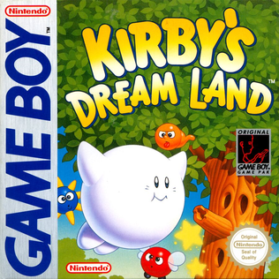

Platformer · 1992
Kirby's Dream Land
A game designed to be finished, and adored for exactly that.

Cover: Wikipedia: Kirby's Dream Land
Facts
- Released
- 1992-04-27
- Genre
- Platformer
- Category
- Platformer
- Platforms
- Nintendo
- Developers
- HAL Laboratory
- Publishers
- Nintendo